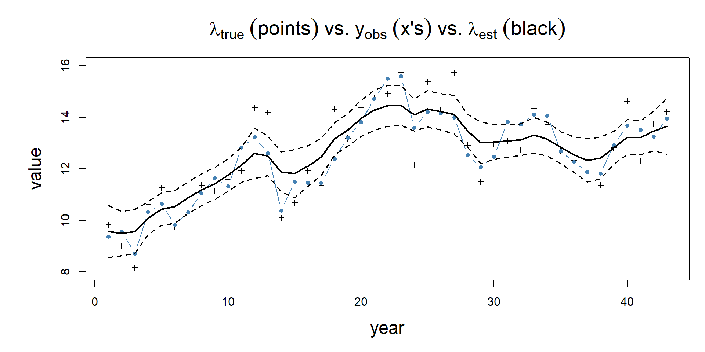
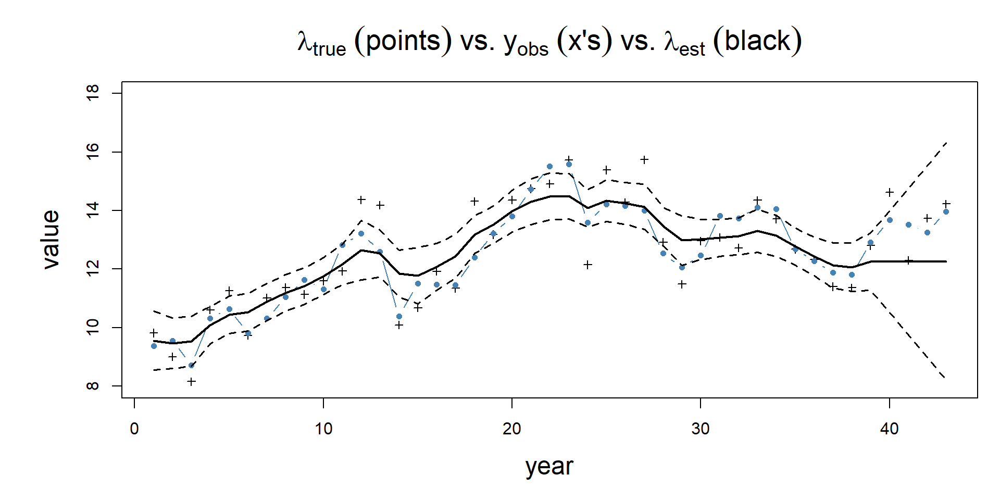
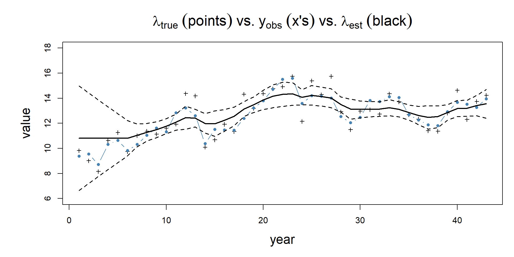
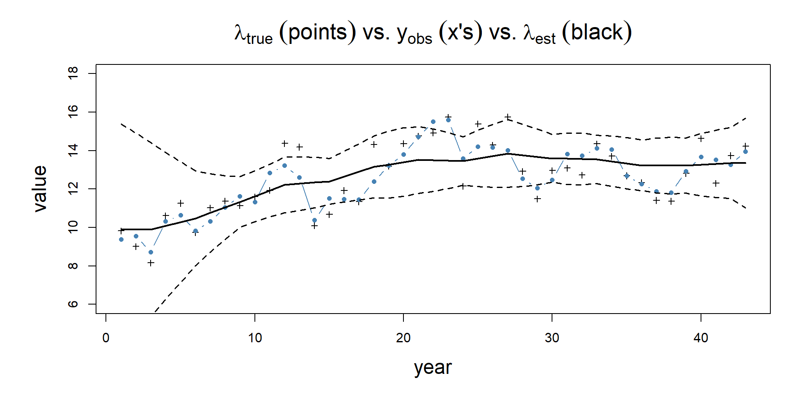

Simulating and estimating a state-space random walk model in R and TMB
Christopher L. Cahill
Quantitative Fisheries Center
Michigan State University
Random walk in R and TMB
Goal:
estimate/simulate a state-space model
Steps:
A bit of math
Simulate fake data in R
Build estimation model in TMB
Pray that it converges, weep if it does not (how to assess?)
How to deal with missing data
Math for a random walk
\(y_t = y_{t-1} + e_{t}\)
R code for simulating a random walk: rw.R
# set leading parameters years =1:43lam0 =10# initial value sd_rw =1# stdev of processsd_obs =0.8# stdev of observationslams =rep(NA, length(years)) # true lambdasy_obs =rep(NA, length(years)) # observed dataset.seed(1) # ensure "random" data are samelams[1] =rnorm(1, lam0, sd_rw) # initialize the stochastic process# do the random walk, add in process error:for(i in2:length(years)){ lams[i] =rnorm(1, lams[i-1], sd_rw) }# add observation error to true (latent) process:y_obs =rnorm(length(lams), lams, sd_obs)
# create dynamically linked library:dyn.load(dynlib("rw"))# create a tagged data list: data <-list(y_obs = y_obs)# create a tagged parameter list w/ start values:parameters <-list(ln_sd_rw =0, ln_sd_obs =0,lam0 =0,lams =rep(0, length(data$y_obs)))# create objective function based on template:obj <-MakeADFun(data, parameters, random ="lams", DLL="rw")
sdreport(.) result
Estimate Std. Error
ln_sd_rw -0.50223741 0.3639872
ln_sd_obs 0.07582131 0.1690006
lam0 9.57015318 0.9388089
Maximum gradient component: 3.136849e-05
Note: may need to apply a bias correction
see ?sdreport
Important: are the SDs too big?
Are diagnostics consistent with convergence?
final_gradient = obj$gr(opt$par)
iter: 1 mgc: 8.326673e-15
outer mgc: 3.136849e-05
if (any(abs(final_gradient) >0.001) || sdr$pdHess ==FALSE) {message("Model did not converge: check results")} else {message("Model diagnostics consistent with convergence")}
[1] "Model fit consistent with convergence"
Why are these reasonable things to check?
Fits vs. simulated data

How did we plot those results?
First, look at the structure of the sdreport() output
Warning: 4 external pointers will be removed
Note: Library 'rw.dll' was unloaded.
[1] 0
# create dynamically linked library:dyn.load(dynlib("rw"))# make some funky data:y_obs2 = y_obsy_obs2[31:35] =NA# create a tagged data list: data <-list(y_obs = y_obs2)# create a tagged parameter list w/ start values:parameters <-list(ln_sd_rw =0, ln_sd_obs =0,lam0 =0,lams =rep(0, length(data$y_obs)))# create objective function based on template:obj <-MakeADFun(data, parameters, random ="lams", DLL="rw")
Visualize the hierarchical model fit - remove data years 31-35
Visualize the hierarchical model fit - remove last 3 years

Visualize the hierarchical model fit - remove first 5 years

Visualize the hierarchical model fit - data every third year

Concluding remarks
We have skipped over a lot of important theory and math.
If n was large and we repeated this simulation experiment many times what do we expect?
Concluding remarks
We have skipped over a lot of important theory and math.
If n was large and we repeated this simulation experiment many times what do we expect to happen?
The maximum likelihood estimator is consistent.
Consistency equation…
There are other ways to do this.
Most of what we have done here can be done entirely within TMB using a special SIMULATE{} block.
Useful references
Royle and Dorazio. 2008. Hierarchical modeling and inference in Ecology.
Kéry and Schaub. 2012. Bayesian population analysis: A hierarchical perspective
Holmes, Scheuerell, and Ward. 2021. Applied Time Series Analysis for Fisheries and Environmental Sciences. https://atsa-es.github.io/atsa-labs/index.html#authors